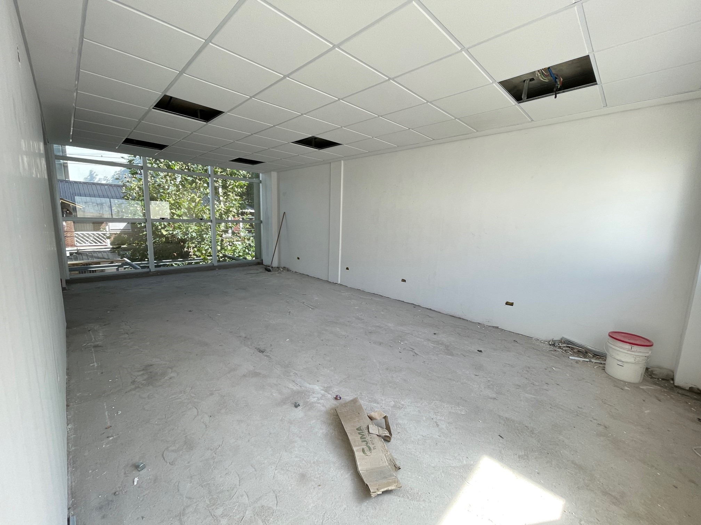
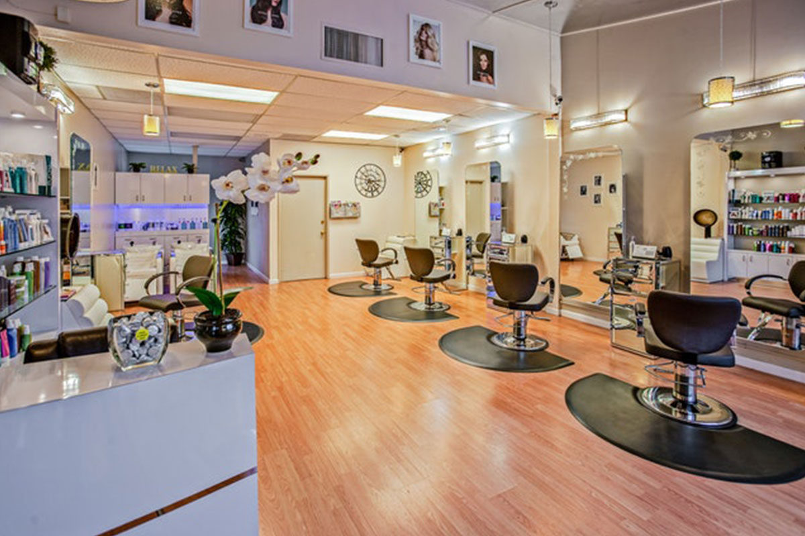

Inicios

En un elegante vecindario llamado BellezaBrisa, había una creciente demanda de un lugar donde las personas pudieran encontrar el toque perfecto de glamour. Este deseo se convirtió en realidad cuando Amelia, una apasionada estilista y maquilladora, decidió abrir su propia estética unisex, "Glamoure". El día de la gran inauguración finalmente llegó. Amelia había trabajado incansablemente para preparar su estética. El local, con su decoración lujosa y espejos decorativos, irradiaba un encanto elegante y moderno. Los detalles en tonos dorados y negros daban un toque de lujo y sofisticación al lugar. La mañana de la inauguración, BellezaBrisa estaba llena de emoción.  Los residentes del vecindario habían escuchado sobre la nueva estética y estaban ansiosos por experimentar el glamur que "Glamoure" prometía. Amelia estaba radiante y emocionada mientras se preparaba para recibir a su primera clientela. La inauguración comenzó con una breve ceremonia en la que Amelia agradeció a su familia, amigos y la comunidad por su apoyo constante. Ella expresó su deseo de brindar un toque de lujo y glamour a la vida de las personas, sin importar su género. A medida que avanzaba el día, "Glamoure" se llenó de clientes que buscaban tratamientos de belleza, maquillaje y peinados que reflejaran su estilo y personalidad. El equipo de estilistas y maquilladores de Amelia trabajaba con pasión y creatividad para hacer que cada cliente se sintiera como una estrella de cine. Los días y las semanas pasaron, y "Glamoure" se convirtió en un punto de referencia en BellezaBrisa para quienes buscaban un toque de glamour y elegancia.  Amelia y su talentoso equipo no solo ofrecían servicios de belleza excepcionales, sino que también organizaban eventos de moda y belleza para mantener a la comunidad al tanto de las últimas tendencias. La apertura de "Glamoure" no solo trajo una estética de lujo a BellezaBrisa, sino que también infundió brillo y glamour en la vida de las personas. Amelia demostró que con pasión, dedicación y un compromiso con la belleza y el glamour, se podían lograr los sueños más deslumbrantes en la vida.